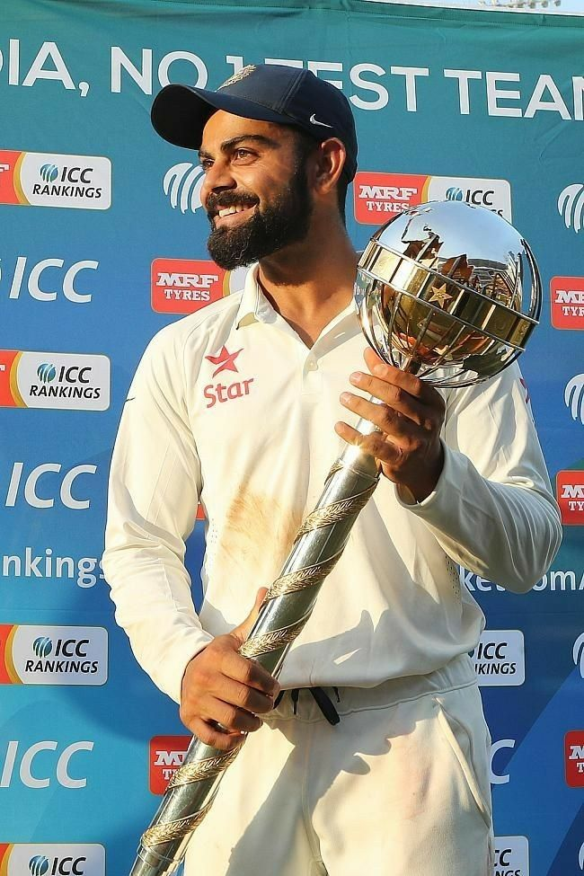

Achievments


Virat Kohli is an exceptional Indian cricketer, renowned for his remarkable batting skills, numerous records, and successful captaincy, making him one of the greatest players in the history of Indian cricket.
Virat Kohli, born on November 5, 1988, in Delhi, India, is an eminent cricketer. He began his cricketing journey at a young age and quickly rose through the ranks. Kohli represented Delhi in domestic cricket and captained the U-19 Indian team to victory in the 2008 ICC U-19 World Cup. He made his international debut in August 2008 and showcased his immense batting talent early on. Known for his aggressive style and remarkable consistency, Kohli has amassed over 20,000 international runs, including more than 70 centuries, across all formats of the game. Kohli's achievements are numerous. He has received several accolades, including multiple ICC Cricketer of the Year awards, Sir Garfield Sobers Trophy, and Rajiv Gandhi Khel Ratna, India's highest sporting honor. In 2013, he was appointed the captain of the Indian Test team, and later took over the captaincy in limited-overs cricket as well. Under his leadership, India achieved notable victories, including the historic Test series win in Australia in 2020-21. Off the field, Kohli is known for his passion, determination, and fitness. He is an advocate for a healthy lifestyle and has been influential in promoting fitness and sports in India. He also actively supports various charitable causes and is involved in philanthropic work. Kohli married Bollywood actress Anushka Sharma in 2017, and the couple has a daughter named Vamika.As of my knowledge cutoff in September 2021, Virat Kohli continues to be an iconic figure in Indian cricket, leaving an indelible mark on the sport with his exceptional skills and leadership qualities.